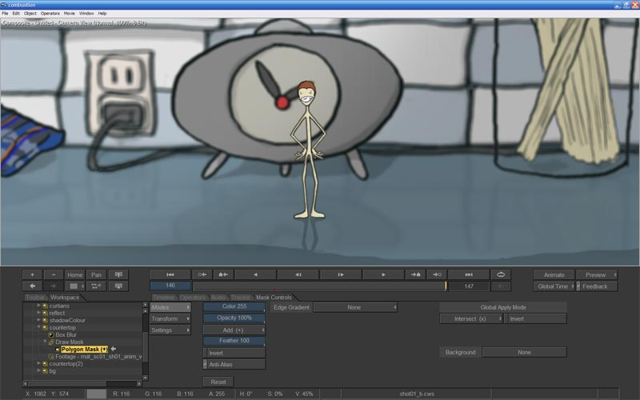

The Animatic
Whew. That took a little longer then expected, but it turned out pretty cool! The first thing I had to do is choose what type of animatic to create that will serve the story the best. I prefer a 2d based animatic over a 3d animatic as they look better, but if there is a lot of movement and animated cameras in the short then 3d animatics are a much better choice. They both take relatively the same amount of time to set up so the decision is yours to make. For "Matchsticks" I'll do up a 2d animatic as this animation is pretty tame. You know, I hate to admit it, but A few years ago I didn't use to do animatics for my personal projects because I thought, "I know what I want and I've no need to explain it to others as I'm doing all the work anyways". Idiot! After becoming a director and having to create animatics as part of the process I realized that the quality of work in terms of timing, staging and performance all improve dramatically if you go through a relatively quick and painless animatic stage. Overall project times go down as well as you know exactly what you are doing so now I'm a firm believer in animatics for everything. I've actually grown to love doing them as I can create a work that captures everything I want to capture in a few days that would literally take months of work in 3d to capture. Now, I tend to do animatics in a slightly more "realized" way then most because I'm still an idiot soooooo.....
The Scene - Well, first step, let's bring that set doodle into Maya and give it some dimension. Since I sketched up the concept in Photoshop I just split the set into layers according to declining distance from camera and saved them off as images with alphas (Select the layer, go to Select>Load selection, go to the Channels tab, create a new mask, and save that pup off as a 32 bit image). Ah, make sure you've actually painted in the detail behind the objects for this to work as well. Next, I started a new scene in Maya and created an image plane for a new perspective camera I titled "shotCam". I loaded in the countertop layer and modeled a really cheap piece of geometry that lines up with details of the image. I then camera projected the image onto the geometry and then mucked around with the UVs AND geometry till everything lined back up to the imageplane. I then created polygon planes with the same aspect ratio as the remaining layers and mapped the textures. Finally, to enrich it more, I curved out some of the planes to mimic the shape of things like the sink and the paste jar. There, a 2 1/2d set ready to go! I created an Ambient Light with and Ambient Shade of 0 for that true colour effect when you render as well. You can download the set here. By the way, you need to put the folder called "animatic" in your sourceimages directory.

Character Blocking. The fun part! Now, I'll say this off the top, I've NEVER done 2d animation. My normal 2d animatics are usually the characters sliding around frame in a few key poses (see the animatic for A Tiny Tiney). Over the last couple of years I've started to draw a lot more (I directed an 3d animation test for Disney that made me appreciate what good drawing can bring to the table) and I went as far as to start a comic book to improve the quality of my work. Anyway, I started out thinking that I'll just do some key poses up and throw together something quick. I want to do some nice character animation in this piece and I want Matchie to come across with a certain happy personality so I sketched up a four pose walk cycle to start the short with. I played these back in sequence and realized I needed more poses as it was REALLY chunky. I knew if I did this, I'd have to draw a lot more poses throughout the whole thing. Ahhhhh, ok, why not! Click on the image for a larger scale.
{kind=link}
And here is the walk cycle and run cycle in action (just mouse over the images). I was actually pretty happy about this! As I've said, I've never 2d animated before and although I suspect these are pretty pathetic, I'm starting to have fun!
The Shots. Well, I have a set, and now I have character animation. All that's left to do is set up the scenes and render this baby out! Not really. This is the time consuming part. I first put the character in the scene and muck around with the set a bit to make it a little more visually pleasing. After doing that everything is ready for me to start working on the timing and composition of the shots. You can download the scenes and files here and open them as I go to see what I've done. First thing to do once you open the scenes is to go to Display>Show>All. This will load all the poses into memory and allow you to scrub in real time.
Oh, and one quick thing about naming conventions...I'm going to try to test out a new convention for this project that goes like this: aaa_bb00_cc00_dddd_v00_r00 whereas a = project name, b = scene #, c = shot #, d = element (animatic, lighting, animation, modeling, whatever), v = version, and r = revision. So shot 2 for this project is mat_sc01_sh02_anmt_v01_r01. I didn't put in a sequence designation 'cuz my shorts are, well......short. I'll see as I go if this is better then my previous conventions. Cheers!
Shot 1 - I want Matchie to walk out to centre stage, stop, and smile. This shot went pretty smoothly, actually. I decided to do the animation keying in Maya. I keyed the Visibility attribute on a whole wack of planes with Matchie's poses mapped on. The reason is that once this is set up I can control timing as well as staging all in Maya including the very important camera. A few hours and I'm done. Next.
Shot 2 - I then want to come in close to his face and have his smile fill frame. I've drawn a close-up of his smiling mug that I'm just going to composite in later so I really only need to line the camera up in scene and render out the background. Easy!
Shot 3 - Ah, shot #3....this is where things get a little tiresome. Setting up the Visibility keys takes forever. I didn't have enough poses in the stretching bit so I improvised with a little remodelling of a duplicated mapped plane. It worked out well, so I used the technique a lot all over. I initially did only one run cycle but I realised that this was pretty boring so I did up another one with him smiling I could plop in during one of the runs. Hey, that's better! A few more tweaks on the fall and the poses all look good. Nice! Next was the previz for the fire. I grabbed some reference online and did up an initial strike, the slow head burn and the body incinerating fireball. I like the first two but the fireball at the end still needs work. Good for previs, though, so I let it stand. The biggest challenge was to get the general timing down. That, after all, is the reason for animatics in the first place and I was actually glad I did it this way because I really got what I was going for. I think I'll change how he actually burns himself to a crisp when I get to the 3d animation but I'm pretty happy on how the timing stands now. Well worth the effort!
Making It Look Pretty. There are a few other things an animatic can help with beyond animation timing and composition. Lighting and effects can also be blocked in quickly as well. For that, it's easier if I render everything out in layers and create some quick composites. What I'm looking for is to see if a depth-of field and a bit of shadowing from the window will help in popping the character out from the background. I know when I get to the 3d render set up I'll have way more ways of doing this but since I like compositing I can do up some of this stuff now. So I set up the scenes to render in Maya. Everything goes well until I try to render the character pass.....since I keyed Visibility and since Visibility is a boolean (only on or off, baby) AND since motion blur reads the subframes around each frame....well, needless to say the character pass didn't render out too well. So I set up a hardware render. Ha, that looks terrible! Agh, this is turning into a pain. Ok, final solution, turn motion blur off. Done. So it all rendered out well. The only thing of major note is that my computer is kinda slow. I'll have to see if I can get something faster when it gets time to render. Doug Campbell, super cool guy and owner of Spin Pro West has offered me the use of a renderfarm if needs be, and that is pretty cool! Thanks Doug! I want to see if I can somehow get a hold of one of those dual-quads and do it myself but we'll see how it goes. Anyways, FOCUS! Back to the animatic!
Compositing went pretty well. I brought the layers in and blurred each one from back to front. For Shot 1 I animated a little focus pull (minus the zoom) which was pretty funny. Since my computer is slow and I'm working on 7 HD1080 layers I couldn't see anything without rendering, so I took a page from Tron and wrote out the keys on paper and manually punched them it. I felt so '80s. Worked out kinda well, though. Shot 2 was pretty simple, as well as Shot 3. Compositing done.

Almost there!. Next stop is the edit and sound design. The edit is REALLY easy, as I know what I want and don't have to do much more then hold the odd frame. I did go for the Title > Scene > Title > Scene opener just for fun...but I still don't know if it really works. I'll wait for the final and see if whatever music I come up with will make it feel right. I like the cut back at the ending, though....the best! Next up is sound design. Larry Bafia gave me really good advice once. He said always put sound to your animatics, even if it's a really bad temp. He was right....it makes it so much more enjoyable (and much easier to sell to a client, apparently, if you are into that). For foley I usually go out and record with a hiMD but for temp sounds I do everything with a laptop and mic. The sound quality sucks, but it works. Tamaki did the screaming bits....it was 11pm and I honestly thought the police would be called! What's funny is we recently just met our next door neighbour (hey Nana!) and don't know her too well...with all the screaming I'm sure she now thinks I was torturing poor Tamaki. Heh-he.
Finally! I rendered everything out with a H.264 video compression (65 quality) and an ACC audio compression (44.100 kHz, mono, 128kps) and took a 2.something GB file down to just under 4 mbs! Nice! Unfortunately, the contrast also went as well, but it's good enough I think. Click the image below to see the final animatic.
Ha-ha! Well, that's it for pre-production. I had a lot of fun doing that! I now know what I have to do and I know it will (kinda) work. The 2d animation part made me appreciate 2d animators, and even envy them a little. Don't like a faceshape? Draw one you want! None of that deformation and rigging muck we'll soon be knee deep in. Anyways, I have to take a break for a week because of work but I'll be getting busy with some tests and some modelling for the next post. I'm looking forward too it!
Next stop, production!